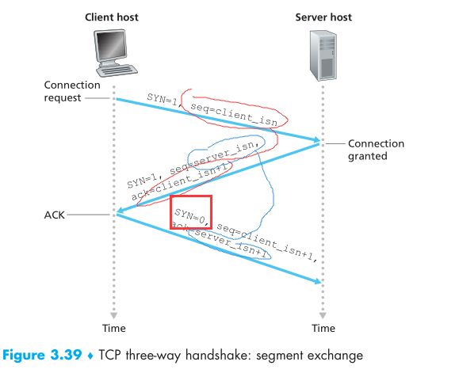
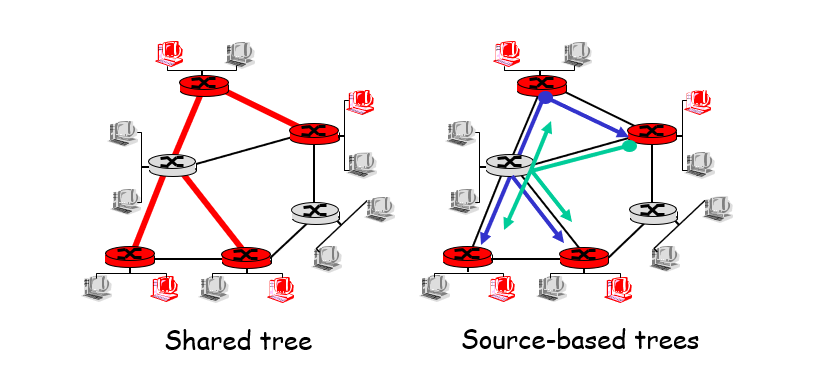

Computer Network——Review From Keywords
https://sakuyui.github.io/2019/04/21/Computer Network——Review From Keywords/ (持续更新)
[TOC]
Keyword
Internet(因特网)
Internet is a global network of all computers that communicative with each other in public languages.It’s a logical network formed by many small subnet.
因特网是由所有使用公用语言相互通信的计算机组成的全球网络,是由许多小的子网组成的逻辑网络。
[extend]
Q1:因特网概念的实质是什么?
全球信息资源的总汇
Q2:计算机设备可以有多个IP地址吗？为什么？什么设备在internet上一定有多个IP地址
可以，插多个网卡爱有几个有几个。路由器
Q3:一个网段可否赋予不止一个 IP 地址？一个接口可否赋予多个 IP 地址？
可以
hosts/end system(主机\终端系统)
hosts is same to end system.It refer to all the devices like computer、cell phone、Web cams which being connected to the internet
主机和终端系统概念相同，是指所有像计算机、手机、网络摄像头之类的连接到互联网的设备
ISP(Internet Service Provider:因特网服务提供商)
Provide the service of accessing the internet
提供互联网的接入服务
Protocol(协议)
Protocol defines the format and the order of messages exchanged between two or more communicating entities.
协议定义了两个或多个通信实体间消息的传输格式和流程
协议的3大要素:
synax:语法
sematic:语义
asynchonomious:同步
API(Application Programming Interface:应用程序编程接口)
API is a series of functions that have been predefined, programmer can use them when programming no need to consider how these functions work inside.
API是预定义的一系列函数。程序员可以在编程中使用，不用管这些函数的内部实现。
Network Edge/Network Core(网络边缘/网络核心)
Network Edge is the devices that in the edge(No more devices connect to them),It main refer to hosts.
网络边缘是指在边缘的设备(没有其他的设备来连接他了)，一般是指主机Network Core is those devices live switchers and routers,which not in network edge. They take an important role in network interconnection.
网络核心是指不在网络边缘的那些设备，比如路由器和交换机。他们对网络的互联起着重要作用
Transmission rate/Bandwidth/Throughput(传输速率、带宽、吞吐量)
Transmission rate:
两个设备间数据流动的物理速率。单位bps
Bandwidth:
数字信道上单位时间内从一端传到另一端的最大数据量.单位bps
Throughput
实际传输速率(单位时间内流过某个端口实际的数据量),单位也是bps
Client/Server(服务器/客户端)
Client is the hosts that initiate a connection.
Server is the hosts that open some ports and wait for clients connect.And then it can provide some services to client.
客户端是指主动建立连接的主机
服务器是指开放着一些端口，等待着连接的主机。而且能为客户端提供一些服务。
[Extend]
服务器和客户端的不同点:
1.建立连接上:服务器被动连接，客户端是主动建立连接
2.一般来说服务器是一直开机的主机
3.一般来说服务器有恒定的ip地址，或者有恒定的域名能映射到其IP地址，方便客户端找到它。
4.一般来说服务器能为客户端提供一些客户端所需的服务
CS(Circuit Switching:电路交换)
It’s a kind of switch way that communicate by setting up a actual link,which mainly used in telephone network
其是一种通过建立实际链路进行通信的交换方式
电路交换的3个过程:
连接建立
信息传输
连接拆除
Multiplexing and Demultiplexing(复用和解复用)
Multiplexing and demultiplexing
In Circuit Switching it’s says informations can transport asynchronously by using TDM or FDM and receive side can get the information it need.
在电路交换中复用和解复用是指各信息能在信道上异步地传输（通过TDM或FDM）（也就是复用），接收端可以相应地获取是传给自己的信息（解复用）In Datagram Switching it’s
将点到点的网络层协议扩展到进程到进程(端到端)的传输层协议的技术
复用:在源端中传输层从不同的socket中将数据片收集起来，加上头信息封装成datagram给网络层
(Gathering data from multiple sockets, enveloping data with header)
解复用:接收端传输层根据信息把各segment传给相应的socket
TDM(Time Division Multiplexing:时分复用)
TDM是指将时间分片并编号，用户只占用指定编号的时间片（slot）
缺点:利用率不高
FDM(Frequency Division Multiplexing:频分复用)
FDM是指将频域划分。每个用户占用一个频域。
缺点:信息要丢容易一起丢。
Store-and-forward(存储转发)
是指将数据包收齐后才转发
End-to-End/Point-to-Point
End-to-End is the feature of transport layer.It’s said that set up a link between source side and destination side before transmission.And sender participate in the transport fully.
端到端是传输层的特性。是指在传输之前建立一条链路。且发送端全程参与传输过程Point-to-Point is say that every devices send the packets to next device which connect directly,until the packet arrive destination
点到点是指每个设备将包发给下一个直连设备，直到包到达接收端
不同点
1.端到端发送端全程参与传输流程，点到点发送端将包发出去后就不管了
2.如果目标设备关机或故障。端到端传输不能实现。
3.点到点发出去后不知道接收端有没有收到包
4.链路建立后端到端知道对方一定能收到
5.点到点节约发送方资源
6.端到端传输延迟小
Protocol Stack(协议栈)
The collection of protocols in same layer
同一层所有协议的集合
Best effort(尽力而为)
IP\UDP\以太网等都是尽力而为服务
发送端只负责把数据包发送出去，然后不保证对方能收到,或者包没被破坏.
因特网是一种尽力而为网络。因为对于数据包的转发，只尽最大努力，不保证接收端一定能无损地收到。包可能会在传输过程中被丢弃或收到损坏。
Statistical Multiplexing(统计复用)
不同于传统的复用。只对有需求的终端分配时隙
Bottleneck link(瓶颈链路)
Bottleneck linke
*IP Spoofing(IP欺骗)
就是伪装成另一个IP进行数据发送
*Man-in-the-middle attacks(中间人攻击)
未授权的实体将自己置于两个通讯系统之间并试图截获正在传递的信息
Socket
In essence it’s a set of APIs.Through these API two end point can establish connection between each other,and each side is called a “Socket”
Socket本质上是一组API。通过这些API，两个终端间可以建立起连接。每一端为一个socket.(其是对TCP/IP的封装)
P2P(Point-to-Point)
在P2P中没有了中心服务器的概念。每个主机都可以是服务器（并不是说没了服务器的概念），资源可以在各个主机间传递。
BitTorrent(比特流)
BitTorrent是P2P的一种文件传输协议。
Tracker
Tracker is a server that maintain information of downloader and offer these information to downloader. Make downloader interconnected.
Tracker是一个服务器维持着下载者的信息并把这些信息提供给下载者。让下载者相互连接起来传输数据
流程
1.用户打开.torrent文件
2.连接上tracker.
3.获得peer表
4.找peer要数据
选块原则:rarest first(稀有优先)
tit-for-tat(针锋相对)
一个peer只传块给当前传块给它速率最快的top4(每10秒重新评估)
每30秒随机找一个peer传块给它
HTTP(Hyper Text Transfer Protocol:超文本传输协议)
端口:80
一种发布、接受html文件的协议
RTT(Round-Trip Time:往返时延)
表示从发送端发送数据开始，到发送端收到来自接收端的确认（接收端收到数据后便立即发送确认），总共经历的时延;
Web Cache/Proxy Server(Web缓存或者代理服务器)
一般用来起到加速作用。也就是网络请求先发给代理服务器。如果代理服务器存在主机所需资源的话，直接回应主机，否则由代理服务器发请求于目的地。
加速原理：局域网内带宽非常高。所以由代理服务器直接提供主机资源可以起到加速作用。就算是代理服务器没有的资源，由代理服务器代发请求也是很快的。对于没有的资源代理服务器会向目的地发送请求。获取相应资源后，缓存，并发给主机。
GET/POST
GET和POST都是发送http请求的方法
不同点:
Get:一个请求只发一个包。参数直接显示在请求url上。只能进行url编码,请求会被缓存,请求有长度限制
优点：效率高
POST:一个请求会发两个包（先发header再发数据）,可以进行各种编码，无长度限制，不会被缓存。
FTP(File Transfer Protocol:文件传输协议)
一种用于文件传输的应用层协议。有两个连接(也就是带外传输技术)，一个端口为20(传数据),一个为21(控制).
User agent(用户代理)
一个方便用户接收邮件的东西。相当于一个邮件阅读器。具有编辑，创作，浏览功能
SMTP(Simple Mail Transfer Protocol)
端口:25
用来发简单邮件的
MIME(Multipurpose Internet Mail Extensions:多用途因特网邮件拓展)
可以传输带有多媒体等的邮件
IMAP(Internet Mail Access Protocol:Internet 邮件访问协议)
收邮件的协议
POP3(Post Office Protocol 3:邮局协议3)
也是用来收邮件的协议。
有下载删除模式和下载保留模式。前者下载邮件后就会在服务器上删除。当换一台主机后就没办法访问已接受的邮件。
与IMAP的不同
POP3允许邮件客户端（Mail client）下载服务器上的邮件。但是在客户端上的操作不会反馈到邮件服务器上（如移动邮件，标记已读等）。
IMAP下客户端的操作会反馈到服务器上
Pull/push protocol
pull protocol如HTTP,是用来“拉取数据”的协议。
push protocol如SMTP是用来“推”数据到服务器的协议
DNS(Domain Name System:域名系统)
是一个将域名和IP地址相互映射的分布式数据库，使人们更好地访问互联网
DNS服务器的类型：
Root server（根服务器）
TLD(Top Layer Domain) server （顶层域DNS）
Authoritative DNS server(权威DNS) :组织、部门之类的DNS服务器
local DNS server（本地DNS）由各大运行商提供
采用分布式而不是中心化DNS服务器的原因
！！！(一般的中心化方案都会有以下缺点)
1.单点失效（single point fail）
2.拥塞量（traffic volume）
3.与中心数据库的距离
4,维护难(Maintenance)
RRs(Resource records)
也就是DNS数据库中的记录，其是一个四元组(Name,Value,Type,TTL)
DHTs(Distibution Hash Tables:分布式哈希表)
一种分布式存储方
在不需要服务器的情况下，每个客户端负责一个小范围的路由，并负责存储一小部分数据，从而实现整个DHT网络的寻址和存储。
BitTorrent可以选用DHTs作为分布式tracker
UDP(User Datagram Protocol:用户数据报协议)
UDP是一种传输层协议，提供connectionless,unreliable,best-effort服务，其可由二元组标识(source port,dest port)
使用UDP传输不需要事先建立连接(connectionless)。其是不可靠的，尽力而为的服务。发出包后无确认机制，拥塞控制、流量控制等（unreliable),不保证对方一定能收到（best-effort).一般用于流媒体、游戏等loss-tolerant,且对bandwidth-sensitive的应用.因为UDP不用建立连接，没有拥塞控制、流量控制等机制，所以传输时延小。可以提供高效服务
length=len(header(64bits)+data) 单位是B,最大长度65535(2^16-1)
FIN:结束连接用的
SYN:建立连接用的
RST:重置连接
ACK标识ack有效
UDP长度项为16bit,单位为字节。最大长度65535(2^16-1),是指整个包的大小（头+数据）
使用UDP进行可靠传输：
可以在应用层实现
UDP,使用二元组(ip，port)标识,无连接。
应用层控制更加精细，能容忍丢失，不希望过分延迟
无需建立连接
首部开销少
UDP是端到端
TCP(Transmission Control Protocol:传输控制协议)
TCP是一种传输层协议，提供connection-orient,reliable服务。在传输之前需要通过3次握手建立连接。且有确认，重传，拥塞控制、流量控制等机制保障可靠传输。其需要一个4元组标识（source ip,source port,dest ip,dest port)
对于TCP协议来说，整个包的最大长度是由最大传输大小（MSS，Maxitum Segment Size）决定，MSS就是TCP数据包每次能够传输的最大数据分段。为了达到最佳的传输效能TCP协议在建立连接的时候通常要协商双方的MSS值，这个值TCP协议在实现的时候往往用MTU值代替（需要减去IP数据包包头的大小20Bytes和TCP数据段的包头20Bytes）所以往往MSS为1460。 通讯双方会根据双方提供的MSS值得最小值确定为这次连接的最大MSS值。
header length:一般来说options为空，所以20字节
ARQ protocol(Automatic Repeat reQuest:自动重传请求)
接收方请求发送方重传出错的数据报文来恢复出错的报文，是通信中用于处理信道所带来差错的方法之一
Stop-and-wait（停等）
是rdt2.0引入的方式。也就是发出包后，一直等ACK或者NAK到达

Alternating-bit protocol(交替位协议)
指rdt3.0,也就是交替地等待序号为0/1的包
GBN(GO-BACK-N)
GBN也叫Sliding Window协议。任何时刻包会有4种状态：已确认、已发送尚未确认.可用，未发送、不可用
窗口内包含已发送尚未确认.可用，未发送的数据。
GBN的算法是。只接受当前需要的包（也就是按顺序的包）。顺序不对的包全部丢弃，并发一个ack回去，指明当前需要的包。
窗口大小必须=$2^n-1$
SR(Selective Repeat:选择重传)
也是利用窗口的一种缓冲方式。。不同于GBN。SR会缓存接受到的包。
过程:
sender:
1.如果有可以发送的包，就发送
2.timeout:重发包
3.收到ack,标记为acked
4.如果是最小序号的ack.就滑动窗口
receiver:
1.发送ack
2.对于乱序版，缓存
3.同样，缓存的包能连起来了就移动窗口
窗口大小必须小于1/2 seq号的取值范围
three-way handshake
也就是TCP建立连接的三次握手
这种感觉
关闭连接
MSS(Maximum segment size:最大段长度)
MTU(Maximum Transmission unit:最大传输单元)
一般取1460B
Checksum(校验和)
Checksum（校验和）是在UDP\TCP\IP头部中存在的，用来对包进行校验的信息
计算方式。首先包里检验和部分填0.
16bit（2个字节）相加。（数据部分为奇数字节的话，后面补0）。进位的话，则将高于16字节的进位部分的值加到最低位上
最终结果取反码
[注]
对于UDP：伪首部也要加上(12字节)
UDP’s checksum=伪首部+首部+数据
对于TCP:
同样加上伪首部
IP校验和只校验20字节的IP报头
ICMP校验和覆盖整个报文(ICMP报头+ICMP数据)
UDP和TCP校验和不仅覆盖整个报文，而且还有12个字节的IP伪首部，包括源IP地址(4字节)、目的IP地址(4字节)、协议(2字节)、TCP/UDP包长(2字节)
Congestion Control(拥塞控制)
slow start(慢启动)
慢启动的算法如下(cwnd全称Congestion Window)：
1）连接建好的开始先初始化cwnd = 1，表明可以传一个MSS大小的数据。
2）每当收到一个ACK，cwnd++; 呈线性上升
3）每当过了一个RTT，cwnd = cwnd*2; 呈指数让升
4）还有一个ssthresh（slow start threshold），是一个上限，当cwnd >= ssthresh时，就会进入“拥塞避免算法”（后面会说这个算法）
所以，我们可以看到，如果网速很快的话，ACK也会返回得快，RTT也会短，那么，这个慢启动就一点也不慢。下图说明了这个过程。
Congestion Avoidance(拥塞避免)
拥塞避免状态
前面说过，还有一个ssthresh（slow start threshold），是一个上限，当cwnd >= ssthresh时，就会进入“拥塞避免算法”。一般来说ssthresh的值是65535，单位是字节，当cwnd达到这个值时后，算法如下：
1）收到一个ACK时，cwnd = cwnd + 1/cwnd
2）当每过一个RTT时，cwnd = cwnd + 1
这样就可以避免增长过快导致网络拥塞，慢慢的增加调整到网络的最佳值。很明显，是一个线性上升的算法
拥塞状态
前面我们说过，当丢包的时候，会有两种情况：
1）等到RTO超时，重传数据包。TCP认为这种情况太糟糕，反应也很强烈。
sshthresh = cwnd /2
cwnd 重置为 1
进入慢启动过程
(窗口大小重置1,ssthresh减半)
2）Fast Retransmit(快速重传)算法，也就是在收到3个duplicate ACK时就开启重传，而不用等到RTO超时。
这个情况，还能收到3个重复ack,说明网络状况不算太糟糕。所以窗口不是置1，而是减半
TCP Tahoe的实现和RTO超时一样。
TCP Reno的实现是：
cwnd = cwnd /2
sshthresh = cwnd
进入快速恢复算法——Fast Recovery
上面我们可以看到RTO超时后，sshthresh会变成cwnd的一半，这意味着，如果cwnd<=sshthresh时出现的丢包，那么TCP的sshthresh就会减了一半，然后等cwnd又很快地以指数级增涨爬到这个地方时，就会成慢慢的线性增涨。我们可以看到，TCP是怎么通过这种强烈地震荡快速而小心得找到网站流量的平衡点的。
Fast recovery(快恢复)
这个算法定义在RFC5681。快速重传和快速恢复算法一般同时使用。快速恢复算法是认为，你还有3个Duplicated Acks说明网络也不那么糟糕，所以没有必要像RTO超时那么强烈。 注意，正如前面所说，进入Fast Recovery之前，cwnd 和 sshthresh已被更新：
cwnd = cwnd /2
sshthresh = cwnd
然后，真正的Fast Recovery算法如下：
cwnd = sshthresh + 3 * MSS （3的意思是确认有3个数据包被收到了）
重传Duplicated ACKs指定的数据包
如果再收到 duplicated Acks，那么cwnd = cwnd +1
如果收到了新的Ack，那么，cwnd = sshthresh ，然后就进入了拥塞避免的算法了。
如果你仔细思考一下上面的这个算法，你就会知道，上面这个算法也有问题，那就是——它依赖于3个重复的Acks。注意，3个重复的Acks并不代表只丢了一个数据包，很有可能是丢了好多包。但这个算法只会重传一个，而剩下的那些包只能等到RTO超时，于是，进入了恶梦模式——超时一个窗口就减半一下，多个超时会超成TCP的传输速度呈级数下降，而且也不会触发Fast Recovery算法了。
Flow control(流量控制)
保证接收方可用窗口大小大于或等于当前数据大小
End-to-end Congestion control&Network-assisted Congestion control
End-to-End 型：如靠TCP解决拥塞
网络协助型:网络层组件（如路由器）可以对拥塞状态进行反馈，从而进行控制.比如ATM ABR，带有标识符CI(拥塞)和NI(不算拥塞)进行拥塞控制.
RM cells(Resource-management cells)
在ATM ABR 中可以用来传递拥塞相关信息的包块（ATM ABR中有data cells和rm cells).RM cell中包含CI NI EFCI ER等域
EFCI(Explicit Forward Congestion Indication:明确转发拥塞指示):
在data cell中。中途交换机能够把这位置1.如果目的方看见很多数据包这位为1的话。发个RM包给接收方。CI=1.告诉接收方拥塞了
CI(Congestion indication)
NI(No increase)
ER(Explicit Rate:明确速率)
ATM(Asynchronous Transfer Mode:异步传输模式)
ATM一种包交换技术，与以太网、令牌环网、FDDI等网咯使用的可变长度包技术不同ATM使用53字节固定长度的单元(cell)进行交换。采用电路交换的方式，
AIMD(Additive Increase Multiplicative Decrease:和式增加，积式减少)
就是收到AKC的时候cwnd+1,看到Loss或者timeout就cwnd/2了
NAT(Network Address Translation:网络地址转换)
可以将一个公网地址映射到局域网地址的技术
IP(Internet Protocol:互联网协议)
VC(Virtual Circuit:虚电路)
是分组交换的两种传输方式中的一种,不同于数据报网络。其提供的是面向连接的服务，工作模式类似于电路交换不过线路是虚拟的
过程1.建立虚电路
2.传输数据
3.虚电路释放
VC的组成:
1.path(路径)
2.VC number(VC号)
3.entries(实体)
转发表类似:
| Incoming Interface | Incoming VC num | Outgoing Interface | Outgoing VC num |
|---|---|---|---|
| 1 | 16 | 2 | 22 |
VC号经过转发表后可以被改变
prefix(前缀)
prefix是指网络号部分。比如 xxxx.xxx.xxx.xxx/y,前缀就是指前y位.
Forwarding & Routing(转发和路由)
转发是将一个口进来的包，选择从那个口扔出去（选择口）
路由是选择路径发包（选路），这路径是根据路由算法决定的
ABR(Avaliable Bit rate:可用比特率)
只需指定峰值（Peak）和谷值（Minimum）信元速率
CBR(Constant Bit rate:固定比特率)
有固定的带宽（速率）要求，适用实时的话音和视频信号传输。
Qos(Quality of Service:服务质量)
指一个网络能够利用各种基础技术，为指定的网络通信提供更好的服务能力
ICMP(Internet Control Message Protocol:互联网控制消息协议)
ICMP是IP的子协议，用来发送控制消息.
ping的原理就是发ICMP echo类型的包，然后等对方回应
ICMP也可以进行重定向（Redirect)
比如:
1.H1目前路由表是要找R1。于是需要发个ICMP echo包到R1
2.在这之前先发个ARP请求R1 MAC地址。R1收到ARP后回应
3.把MAC地址装到Datagram发出去
4.显然,R1发现这ICMP echo包不是发给他的（要找R2的）于是就转发给R2
5.然后R1发一个ICMP redirect给主机
6.R2收到被R1转发的ICMP echo包了，但是不知道PC MAC地址。于是ARP来一波
7.主机应答ARP
8.R2获取到MAC后，就把能ICMP respond发给主机了
IPv4&v6
就是ip版本为4和6的协议
不同点
v6:
1.IP地址升级到了128bit(V4是32bit)
v4->v6地址转换方法:前面96为全部置0就行
2.去掉了checksum
3.固定首部为40B(基本首部)
4.增强了安全性
5.增强了对QoS的支持
6.对任播(anycast)的支持
7.v4的options变成了拓展首部
IPv6 payload(IPv6有效负荷)
就是整个v6包去掉基本首部(40B)
HOL blocking
就是指队列中排在前面的包阻碍了后面包的转发
TTL(Time to Live:生存时间)
在IPv4中，是包头的一个8 bit字段，指定该包允许通过的最大网段数量,Max=255.可以用来防止路由环路(包无限循环地转发)
*TOS(Type-of-Service:服务类型)
AQM(Active queue management:主动队列管理)
AQM指路由器在缓存耗尽之前有计划地丢弃一部分分组。就可以提早通知发送方降低发送速率，避免可能出现的危险
Extend:
常见的队列管理方式是：队尾丢弃（缓冲区满后所有到达包都会被丢弃）
会出现3个问题
1.死锁
2.全局同步（Global Synchronization)
指短时间内包被大量丢弃，然后由于TCP自适应功能，窗口大小急剧减小，然后网络又变好了，窗口又开始增大，又造成拥塞
3.满队列
*RED(Random Early Detection:随机早期检测)
RED是指通过监控路由器输出端口队列的平均长度来探测拥塞，一旦发现拥塞逼近，就随机地选择连接来通知拥塞，使他们在队列溢出导致丢包之前减小拥塞窗口，降低发送数据速度，从而缓解网络拥塞
subnet(子网)
子网可以由路由器划分。一般在路由器正常连接下每一个接口都是一个子网。子网可以通过配置的不同的网络号进行区分。
subnet mask(子网掩码)
子网掩码就是将网络位全部置1，主机位全部置0的结果
CIDR(Classless Inter-Domain Routing:无类别域间路由)
也就是不分ABCD类网络了。具体网络号是前多少位由 xxxx.xxx.xxx.xxx/yy 中的yy决定
CIDR可以有效提高IP地址利用率
DHCP(Dynamic Host Configuration Protocol:动态主机配置协议)
DHCP是一个网络层的协议，用来动态获取IP地址
实现原理:
首先需要一台DHCP服务器
然后
step 1.Host不知道DHCP服务器在哪。于是发个广播-dhcp discover(dhcp发现)。(注:源IP地址全0，因为还没IP)
step 2.dhcp服务器收到这个广播包，于是发个DHCP offer(..这是实际上已经得到一个地址了)
step 3:host发个request,告诉DHCP这个IP地址他要用了（还是广播包），如果不发request直接用的话，DHCP服务器不知道刚才发的包host有没有收到。所以再来一轮的相互确认。
step 4:dhcp发个ack，表明已经收到请求，可以使用那个地址。
ICANN(Internet Corporation for Assign Names and Numbers:互联网名称与数字地址分配机构)
ICANN负责：分配MAC，管理DNS，管理IP空间等
plug-and-play protocol(即插即用协议)
UPnP(Universal Plug and Play:通用即插即用)
UPnP 是各种各样的智能设备、无线设备和个人电脑等实现遍布全球的对等网络连接（P2P）的结构
与NAT的关系：NAT需要UPnP支持，支持UPnP的软件可以自动映射需要的接口
dual-stack(双协议栈)
双协议栈是指在一个节点上同时支持ipv4和ipv6
tunnel(隧道)
隧道是一种封装技术，能够把ipv6数据包封到ipv4包里，ipv4的包封到ipv6里进行传输。从而实现包在不同协议版本的设备上传输。（注：使用隧道技术时，另一个协议是作为链路层协议。（来自课本课后习题））
ARP(Address Resolution Protocol:地址解析协议)
ARP是一个网络层协议，能够将IP地址解析为设备的MAC地址。
具体过程见另一篇文章
https://sakuyui.github.io/2019/04/07/[转]TCP、IP、ARP协议之间的工作关系/
或
https://www.cnblogs.com/itsad/p/8250503.html
简单说就是
对于一个传输层的包
到了网络层，IP协议拿到后，先加上个目的地的IP地址
然后判断是否在同一网段
在同一网段的话：
1.让ARP协议去获取MAC地址。
2.ARP拿到后先看看ARP缓存里有没有，没有的话就广播，有的话就直接拿来用了
不在同一网段的话:
将包发给默认网关
[Extend]
路由器隔离广播域，但是ARP仍能正常工作。因为代理ARP（Proxy ARP）的存在.代理ARP也就是，路由收到不同网段的ARP请求后，会拿自己的MAC地址返回。
路由有隔离广播域的作用
路由每一个口是一个广播域
交换机每一个口是一个冲突域
RARP(Reverse Address Resolution Protocol:反向地址转换协议)
与ARP相反。RARP是根据MAC地址从网关上的ARP表或者缓存中获取IP地址的协议
LS(Link-State:链路状态)
LS是一种路由算法类型。OSPF就是典型的LS算法。其向邻居通告的是路由状态，是一种全局性的算法，每个节点都知道链路的所有信息
*详细见OSPF
DV(Distance-Vector:距离向量)
距离向量也是一种路由算法。典型的有RIP、BGP等，其向邻居通告的是自己的路由表，邻居通过得到的路由表，对自己路由表进行调整。是一种分布式算法
*详细见RIP,具体描述基本也就RIP那些
IGP(Interior Gateway Protocol:内部网关协议)
是在一个AS(自治系统)内交换路由信息的协议。RIP与OSPF都是IGP协议
RIP(Routing Information Protocol)
是基于路由向量的一个内部网关协议(IGP),基于距离向量算法。
RIP对于距离数的是跳数
使用RIP的路由器将自己的路由表发给所有邻居。邻居收到路由表后。跳数+1后，对于相同开销：不处理,对于开销比当前路由表小的：更新路由表，对于得到的路由表中是通过自己到达的项：要强制更新自己路由表（这也是路由震荡产生的原因之一）
RIP3个过程
1.wait(等待)
2.recompute(重计算)
3.notify(通知,一般每隔30秒)
RIP具有慢收敛的特性。坏消息传得慢，可能会出现路由震荡
应对路由震荡的措施
1.Split Horizon(水平分割)
从一个接口收到的路由信息，发送刷新报文时不会发回给这个接口。
2.Poisoned Reverse(毒性反转)
类似水平分割。不过保留了从某接口得到的路由信息，发回给该接口时置成16（无穷大）
3.Triggered Update(触发刷新)
检测到崩溃立即发送刷新报文，而不等到计时器结束
OSPF(Open Shortest Path First:开放式最短路径优先)
OSPF是基于链路状态的路由算法。其一般通过djskra算法计算某节点到所有节点的cost,每个节点都有相同的信息，且知道从它到每个节点的cost,是一种全局性的算法。节点发送的是与所有邻居的链路状态,而且是发给所有节点
RIP与OSPF的不同
0.how(如何计算):RIP计算的是跳数，OSPF计算的是链路开销
1.What(发什么):RIP发的是自己的路由表,而OSPF发的是与所有邻居的链路状态
2.Who(发给谁):RIP是发给邻居，OSPF是发给所有节点
3.When(什么时候发):RIP是每隔一定时间（一般30秒），OSPF是链路状态改变时才会发
OSPF直接由IP携带
Hierarchical Routing(分层路由)
ASs(Autonomous Systems:自治系统)
AS是处于一个管理机构控制之下的路由器和网络群组，AS里所有路由器必须运行相同的路由协议，并分配AS编号(ASN:Autonomous System Number)
IS-IS(Intermediate system to intermediate system:中间系统到中间系统)
一种内部网关协议(IGP),基于LS
BGP(Border Gateway Protocol:边界网关协议)
BGP是一种运行在TCP上的一种自治系统路由协议(唯一一个运行与TCP上的).可以用来使自治系统间相互访问。其是一种外部网关协议
route=prefix+attribute
attribute=AS-PATH+NEXT-HOP+origin+local-preference
议(严格来讲,BGP不是路由协议)。BGP产生的原因是为了在不同自治系统(AS)之间进行路由转发
AS-PATH
AS-PATH是BGP属性的一部分。是一些AS号的集合，每当经过一个AS，就加上一个AS号。AS号越短越优先
还能用来防止环路。如果收到的BUG路由包含自己的AS号，那就丢弃
As号叠加得越多，说明经过的AS越多，那么这个路由的优先级也越低。
相反，经过的AS越少，那么说明路由越优先.
如果具有相同的AS路径长度，优先级由来源决定（IBGP<EBGP<INCOMPLETE）
eBGP(edge BGP)
用于边界的BGP协议，用于在不同自治系统之间
iBGP(internal BGP)
用于AS内部的BGP协议
因为BGP本身不发现路由，所以需要iBGP来总结通过IGP（内部网关协议）计算得到的路由
就是BGP本身不生产路由，直接拿现成的路由拿来用的,为了总结AS内IGP产生的路由，就需要iBGP的存在，然后交到eBGO那
Q:为什么有了IGP还要iBGP
1.IGP处理能力有限
2,BGP控制能力>>IGP
3.BGP可以靠路由属性防止环路
Hot-Potato(热土豆)
AS内某个节点收到包后，如果有多个边界网关可以选择，都可以到达目的地的话，往最近的那个网关传（如何衡量近就靠IGP了）
Uncontrolled Flooding(无控制洪范)
Uncontrolled Flooding是指节点收到一个广播包后，就把广播包副本发给每个邻居节点（除了来源那个邻居）
会形成广播风暴Controlled Flooding(受控洪范)
受控洪范是指，节点记录已收到的广播包，收到一个广播包，如果发现已经收到过的话，就不flooding了
Spanning Tree Broadcast(生成树广播)
利用生成树进行广播的方式。广播包只沿建立好的生成树传播
RPF(Reverse Path Forward:反向路径转发)
只转发沿最短路径到来的广播包
IGMP(Internet Group Manage Protocol:Internel组管理协议)
其是运行在主机与组播路由器上的协议。允许一个主机指定他想加入的分组，组播路由器上保存有一张表，记录路由各个接口上有哪些组成员
每个网段有唯一查询器（组播路由器）
新主机主动发报告
主机离开后，路由器会看看还有没有人
IGMP snoop(IGMP嗅探)
IGMP Snoop是在链路层的协议。可以在交换机上建立转发表项，把组播包发到相应的的接口。如果交换机不知道IGMP snoop或者未打开IGMP snoop,将按广播包处理
链路层广播包：MAC地址全FF
shared Tree(共享树)
所有组成员使用相同的树
Source Tree(源树)
每个组成员的树不同

PIM(Protocol Independent multicast:独立组播协议)
PIM-DM
独立组播协议的的一种模式-密集模式。使用源树。
PIM-SM
独立组播协议的一种模式-稀疏模式，使用共享树
DM与SM的不同：
1.Dense:假设大部分主机参与组，比较密集分配。先发广播消息，不参与的向上游发剪枝消息
Sparse:提出加入请求，才可以接收组播消息
DVMRP(Distance-Vector Muiticast Routing Protocol:距离向量多播路由协议)
是一个内部网关路由协议,依赖单目标广播协议的机制.
具有RPF(反向路径转发)的基于source的树
利用剪枝
与PM-DM的异同
同:都用RPM技术构建以源为根的广播树
异:PIM完全独立于单播协议，DVMRP依赖单播协议
*RPM(Reverse Path Multicasting:反向路径多目标广播)
FEC(Forward Error Correction)
接受方能检测并纠错的能力
LLC(Logical Link Control:逻辑链路控制)
LLC是数据链路层的上层部分，通过LLC子层为网络层提供统一的接口
MAC(Medium Access Control:介质访问控制)
主要解决信道分配和信道竞争问题。除此之外，还有数据帧收集(Data Frames assemble ),数据帧拆卸(Data Frames Disassemble),错误探测(Error detection),地址解析等功能(Address Resolution)。是LLC的子层
MAC地址:是一个48bit的硬件地址，由ICANN分配
CSMA(Carriage Sense Multiple Access:载流监听多路访问)
CSMA是一个数据链路层的协议。可以让一个信道被多个节点使用。
工作方式为.1.不坚持型:如果检测到信道繁忙就等待一个随机时间,idel就直接传
2.1-坚持型：检测到繁忙就一直等到信道空闲,然后马上发（可能会冲突，因为其他节点可能也在等，然后空闲后一起发就炸了）
3.P-坚持型,前两个的结合。检测到空闲的话以p的概率传。忙的话一直等
CSMA/CD(CSMA with Collision Detection:带冲突检测的CSMA)
也就是带有冲突检测的CSMA。工作流程为:
发送-》检测冲突，不冲突的话就完成。冲突的话冲突count++,大于16就算失败。否则的话随机等待一个时间重发
CSMA/CA(带冲突避免的CSMA)
一般用在无线网
802.11局域网在使用CSMA/CA的同时，还使用停止等待协议。这是因为无线信道的通信质量远不如有线信道的，因此无线站点每通过无线局域网发送完一帧后，要等到收到对方的确认帧后才能继续发送下一帧。这叫做链路层确认。虚拟载波监听(Virtual Carrier Sense)
是让源站把它要占用信道的时间(包括目的站发回确认帧所需的时间)及时通知给所有其他站，以便使其他所有站在这一段时间都停止发送数据
退避算法
信道从忙态转为空闲时，各站就要执行退避算法
设置了一个退避计时器(backoff timer)。站点每经历一个时隙的时间就检测一次信道。这可能发生两种情况:若检测到信道空闲，退避计时一器就继续倒计时;若检测到信道忙，就冻结退避计时器的剩余时间，重新等待信道变为空闲并再经过时间DIFS后
Self-learning(自学习)
自学习就是交换机收到一个包后，会登记包的来源，放到交换表里。然后查表里有没有目的方的信息，没有的话就广播，有的话就往相应口发。
polling(池化)
master机让slaves机轮流发消息
VLAN(Virtual LAN:虚拟局域网)
VLAN是组逻辑上的设备和用户，可以形成自己的广播域
Collision domain(冲突域)
交换机每个接口构成一个冲突域
Enthernet(以太网)
以太网（Ethernet）是一种计算机局域网技术,标准拓扑结构为总线型拓扑.是目前应用最普遍的局域网技术，取代了其他局域网标准如令牌环、FDDI和ARCNET
Token Ring(令牌环)
也是一种局域网计算。使用一个特殊的帧叫做“令牌”，谁有令牌谁有传输权
工作机制:
（1）首先进行环的初始化（建立一逻辑环），然后产生一空令牌，在环上流动。
（2）希望发送帧的站必须等待，直到它检测到空令牌的到来。
（3）想发送的站拿到空令牌后，首先将其置为忙状态，该站紧接着向令牌的后面发送一个数据帧。
（4）当令牌忙时，由于网上无空令牌，所有想发送数据帧的站必须等待。
（5）数据沿途经过的每个站环接口都将该帧的目地地址和本站的地址相比较，如果地址符合，则将帧放入接收缓冲区，再送入本站，同时帧将在环上继续流动；若地址不符合，环接口只将数据帧转发。
（6）发送的帧沿环循环一周后再回到发送站，由发送站将该帧从环上移去，同时释放令牌（将其状态改为“闲”）发到下一站 [2] 。
Fragmentation(分片)
Fragmentation是指IP包的大小>MTU时，分段传送
IP包头中 flag=(保留位,DF,MF)
flag=1(MF=1 DF=0)代表还有分片
flag=0(MF=0 DF=0)代表所有分片已经收完Example:
MTU=1500 且 datagram size=4000B
求分段数量，大小，还有标志,偏移
| Fragment(片段) | Bytes | ID | Offset | Flag |
|---|---|---|---|---|
| Fragment1 | 1480 | 0 | 1 | |
| Fragment2 | 1480 | 185 | 1 | |
| Fragment3 | 3980-1480-1480 | 370 | 0 |
片段数=(Datagram Size-20)/(MTU-20) 向上取整
flag在最后一片=0，其余为1
注意，偏移单位为8bit….所以上表第2片偏移是1480/8=185,第3片偏移是(1480+1480)/8=370
不能整除8的话，就取最大能整除8的
PDU(Protocol Data Unit:协议数据单元)
协议数据单元是指对等层传输的数据单元，如应用层为message,传输层为segment,网络层为datagram,数据链路层为frame
SNMP(Simple Network Management Protocol:简单网络管理协议)
SNMP是TCP/IP协议簇的一个应用层协议,是一种在IP网络中管理网络节点（如服务器、工作站、路由器、交换机等）的标准协议
Channel Partitioning(信道划分)
MAC层进行多路访问的一种方式。将信道划分，然后分配信道给节点使用
TDMA(Time Division Multiple Access:时分多路访问)
FDMA(Frequency Division Multiple Access：频分多路访问)
Random Access Protocol(随机访问协议)
链路层的访问协议类型之一，不同于信道划分。其专注于如何探测冲突和如何从冲突中恢复
典型Random Access Protocol有ALOHA,slot ALOHA,CSMA,CSMA/CD,CSMA/CA
效率上CSMA>ALOHA>slot ALOHAslot ALOHA
是对纯ALOHA协议的一个改进，思想是用时钟来统一用户的数据发送。改进之处在于，它把频道在时间上分段，每个传输点只能在一个分段的开始处进行传送。用户每次必须等到下一个时间片才能开始发送数据，每次传送的数据必须少于或者等于一个频道的一个时间分段。这样很大的减少了传输频道的冲突。从而避免了用户发送数据的随意性，减少了数据产生冲突的可能性，提高了信道的利用率。(简述:在每个时隙如果没冲突，在下一个时隙就继续发，如果发现冲突的话，下次开始以p概率重发，直到成功)
优点:
简单、单节点的话可以快速传播
缺点:
有空闲时隙
传输需要时间可以小于划分的时隙
会冲突
浪费时隙
pure ALOHA
就是不划分时隙。。纯的ALOHA。节点间没有同步性
Q:描述五层模型，各层的作用
1.应用层:是与用户交互的接口，是五层模型中的最高一层，能够提供文件传输(FTP)、电子邮件(SMTP\MIME\IMAP\POP3)、网页访问(HTTP)、简单网络管理(SNMP)、远程访问(Telnet)等应用
2.传输层:可以实现端到端的数据传输，具有缓冲作用。传输层有TCP协议，可以进行可靠的端到端传输，UDP协议可以进行不可靠传输
3.网络层:主要功能是转发和路由。转发是指，选择接口将包发出，路由是指根据路由算法决定包的传播路径。除此之外还有建立和拆除网络连接，分段，流量控制等功能。具有的协议有IP、ICMP、IGMP、ARP、RARP等
4.数据链路层:主要协议有CSMA,CSMA/CD CA,PPP等.主要功能为成帧(Framing),检错纠错,链路接入,可靠交付
4.1 MAC层:主要解决信道的分配和信道竞争问题。除此之外还有错误检测、数据包收集和分发、地址解析等功能
5.物理层:定义了物理传输的一些规范。为数据传输提供实体。
SBR(Signal-to-Noise Ratio:信噪比)
信号与噪声的相对测量
CDMA(Code Division Multiple Address:码分多址)
CDMA属于信道划分协议的一族。保证多个发送方信号不相互干扰
用比特乘一个编码
CSMA/CA
FDDI(光纤分布式数据接口)
访问方法与令牌环类似。不过使用定时令牌
FDDI令牌沿网络环路从一个结点向另一个结点移动，如果某结点不需要传输数据，FDDI将获取令牌并将其发送到下一个结点中。如果处理令牌的结点需要传输，那么在指定的称为“目标令牌循环时间”（Target Token Rotation Time，TTRT）的时间内，它可以按照用户的需求来发送尽可能多的帧。因为FDDI采用的是定时的令牌方法，所以在给定时间中，来自多个结点的多个帧（多令牌）可能都在网络上，以为用户提供高容量的通信。
Frame Relay:帧中继
帧中继是一种数据包交换通信网络.采用高速虚电路
编码方式
1.曼切斯特:
1朝向左 0朝向右
2.差分曼切斯特
1平0跳
指数退避算法
退避算法是在在单个信道的基于竞争的介质的一种访问控制（MAC）协议。每当一个以上的节点在同一时刻试图访问介质的时候，它会导致分组碰撞。如果相撞的节点试图再次访问信道，在节点做及时同步的时候数据包将发生碰撞。因此，节点需要时间位差。为了产生这种位差，退避算法（例如二进制指数退避（BEB）） 。例如，在BEB算法中，每当一个节点的传输涉及在与另一个节点的传输发生碰撞，两个节点都将选择一个随机的等待时间，在下次再次尝试前需要等待选择的随机时间。如果他们在这样的尝试都没有成功，他们自己的竞争窗口增加一倍，在发射前再次选择等待一个随机时间。这个过程将被重复一定次数的尝试。如果经过数次尝试之后都失败了，那么其传输的数据包将被从传输队列中移除。
二进制退避技术（Binary Exponential Back off）. 指在遇到重复的冲突时，站点将重复传输，但在每一次冲突之后，随着时延的平均值将加倍。二进制指数退避算法提供了一个处理重负荷的方法。尝试传输的重复失败导致更长的退避时间，这将有助于负荷的平滑。如果没有这样的退避，以下状况可能发生：两个或多站点同时尝试传输，这将导致冲突，之后这些站点又立即尝试重传，导致一个新冲突。
FDDI 采用令牌传递的方式解决共享信道冲突问题,与共享式以太网的 CSMA/CD 的效率 相比在理论上要稍高一点 (但仍远比不上交换式以太网)